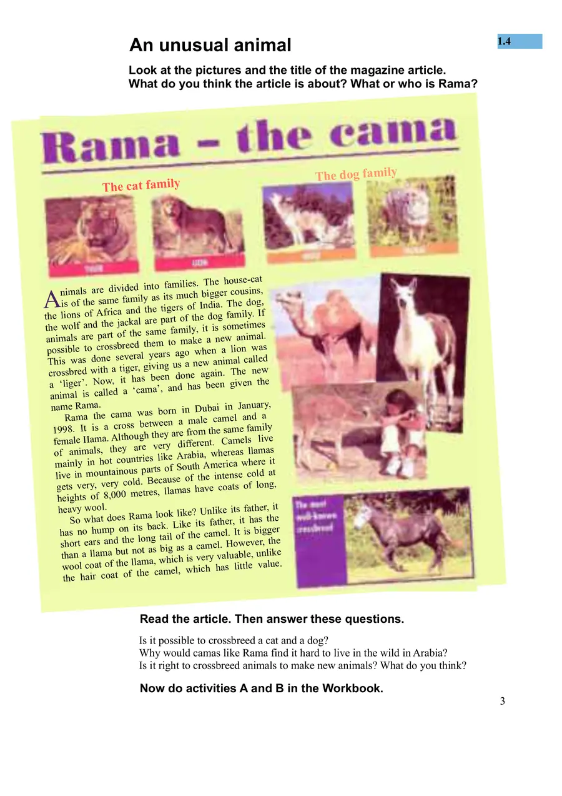

1.4 An unusual animal Look at the pictures and the title of the magazine article. What do you think the article is about? What or who is Rama?
Rama – the cama The cat family: TIGER | LION The dog family: WOLF | JACKAL The most well-known crossbreed
e ca m a) ولم يقرأ العناوين المدمجة في الصور (TIGER, LION, WOLF, JACKAL, The most well-known crossbreed)، فاستُعيدت جميعها بصرياً من شرائح 250–400 DPI.Animals are divided into families. The house-cat is of the same family as its much bigger cousins, the lions of Africa and the tigers of India. The dog, the wolf and the jackal are part of the dog family. If animals are part of the same family, it is sometimes possible to crossbreed them to make a new animal. This was done several years ago when a lion was crossbred with a tiger, giving us a new animal called a ‘liger’. Now, it has been done again. The new animal is called a ‘cama’, and has been given the name Rama.
Rama the cama was born in Dubai in January, 1998. It is a cross between a male camel and a female IIama. Although they are from the same family of animals, they are very different. Camels live mainly in hot countries like Arabia, whereas llamas live in mountainous parts of South America where it gets very, very cold. Because of the intense cold at heights of 8,000 metres, llamas have coats of long, heavy wool.
IIama (بحرفي I كبيرين سهواً) ثم كُتبت llamas بصورتها الصحيحة في السطر الخامس. أُبقينا نص الكتاب حرفياً في الفقرة وسُجّلت الحالة في REVIEW_NEEDED.md.So what does Rama look like? Unlike its father, it has no hump on its back. Like its father, it has the short ears and the long tail of the camel. It is bigger than a llama but not as big as a camel. However, the wool coat of the llama, which is very valuable, unlike the hair coat of the camel, which has little value.
Read the article. Then answer these questions. Is it possible to crossbreed a cat and a dog? Why would camas like Rama find it hard to live in the wild in Arabia? Is it right to crossbreed animals to make new animals? What do you think? Now do activities A and B in the Workbook.
[
{
"num": 1,
"question": "In which country or countries can you find tigers?",
"model_answer": "India.",
"explain_ar": "ورد في السطر الثالث: the tigers of India."
},
{
"num": 2,
"question": "What animals are in the same family as the dog?",
"model_answer": "The wolf and the jackal.",
"explain_ar": "ورد في المقال والصور التوضيحية: The dog, the wolf and the jackal."
},
{
"num": 3,
"question": "When was Rama born?",
"model_answer": "In January, 1998.",
"explain_ar": "من الفقرة الثانية: Rama the cama was born in Dubai in January, 1998."
},
{
"num": 4,
"question": "What kind of animal was Rama's father?",
"model_answer": "A male camel.",
"explain_ar": "من الفقرة الثانية: a cross between a male camel and a female llama."
},
{
"num": 5,
"question": "Which is bigger, a camel or a llama?",
"model_answer": "A camel is bigger.",
"explain_ar": "من الفقرة الثالثة: It is bigger than a llama but not as big as a camel."
},
{
"num": 6,
"question": "Which part of Rama is valuable?",
"model_answer": "Its wool coat.",
"explain_ar": "من الفقرة الثالثة: the wool coat of the llama, which is very valuable."
},
{
"num": 7,
"question": "Why was it possible to crossbreed a lion and a tiger?",
"model_answer": "Because they are part of the same family (the cat family).",
"explain_ar": "تشرح الفقرة الأولى أن التهجين ممكن أحياناً إذا كان الحيوانان من العائلة نفسها."
},
{
"num": 8,
"question": "Why do llamas have heavy wool coats?",
"model_answer": "Because of the intense cold in the mountainous parts of South America (at heights of 8,000 metres).",
"explain_ar": "من نهاية الفقرة الثانية."
},
{
"num": 9,
"question": "Why would it be difficult for camels to live where llamas come from?",
"model_answer": "Because camels live mainly in hot countries like Arabia, whereas where llamas come from it gets very, very cold.",
"explain_ar": "بسبب البرد القارس في المرتفعات مقارنة بالبيئة الحارة للجمال."
},
{
"num": 10,
"question": "In what way is the cama like a camel?",
"model_answer": "Like its father (the camel), it has short ears and a long tail.",
"explain_ar": "من الفقرة الثالثة: Like its father, it has the short ears and the long tail of the camel."
}
][
{
"label_ar": "1) اللون والغطاء (Colour & covering)",
"placeholder": "The cama has a coat of long, heavy brown wool."
},
{
"label_ar": "2) الرأس والأذنان (Head & ears)",
"placeholder": "Like its father the camel, it has short ears."
},
{
"label_ar": "3) الجسم والسنام (Body & hump)",
"placeholder": "Unlike a camel, it has no hump on its back and is not as big as a camel."
},
{
"label_ar": "4) الذيل (Tail)",
"placeholder": "It also has the long tail of the camel."
}
]{
"pdftotext_failures": [
"الصفحة مائلة ومبنية على عمودين؛ فأخرج pdftotext مقاطع مبعثرة من نوع: 'e c a m a w a s born in Dubai in' و'A is of / the lions / the / of / sa / Af / m / ric / e / a / fa m / an d / ily / the tigers of India'.",
"سقط العنوان الكبير (Rama – the cama) وعناوين الصور النقطية (TIGER, LION, WOLF, JACKAL, The most well-known crossbreed) كلياً من مستخرج pdftotext.",
"ظهرت كلمة اللاما في السطر الثالث من الفقرة الثانية بحرفين كبيرين 'female IIama' في الطبعة الرسمية المطبوعة (مؤكد بصرياً عند 400 DPI)."
],
"verification_method": "تصدير PDF ص 5 إلى PNG بدقة 250 و400 DPI + تقطيع بصري أفقي وقراءة تمريرتين مستقلتين + مطابقة أسئلة WB ص 4 (PDF ص 5) مع مخرجات tesseract.js eng."
}